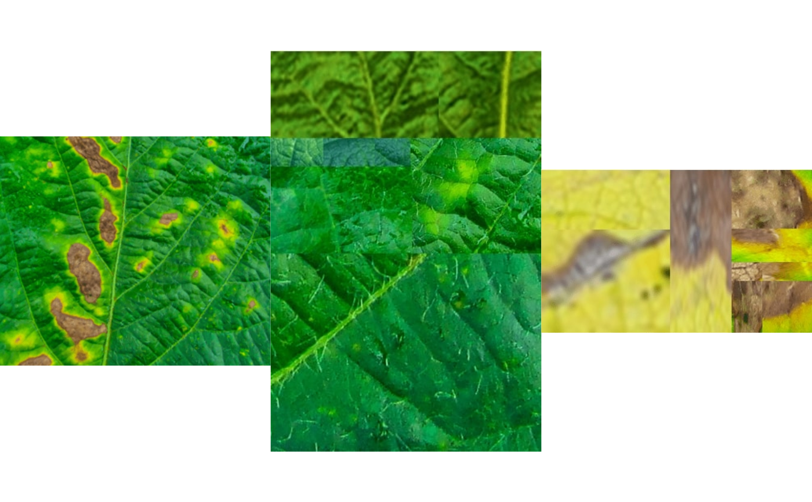
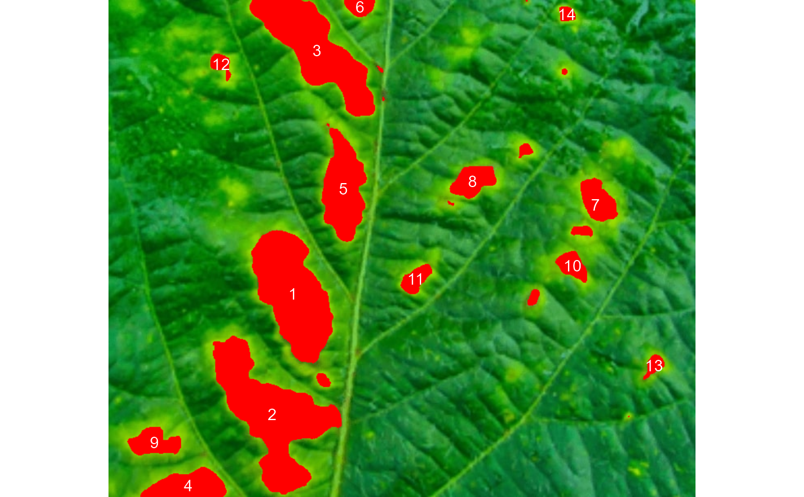

count_lesions.RdCounts the number of lesions in a sample or entire leaf based on provided
color palettes samples. A general linear model (binomial family) fitted to the
RGB values is used to segment the lesions from the healthy leaf. If a pallet
of background is provided, the function takes care of the details to isolate
it before computing the number and area of lesions. By using img_pattern it
is possible to process several images with common pattern names that are
stored in the current working directory or in the subdirectory informed in
dir_original.
count_lesions( img, img_healthy = NULL, img_lesion = NULL, img_background = NULL, img_pattern = NULL, parallel = FALSE, workers = NULL, resize = FALSE, invert = FALSE, index = "NB", my_index = NULL, lower_size = NULL, upper_size = NULL, randomize = TRUE, nrows = 10000, lesion_size = "medium", segment = TRUE, tolerance = NULL, extension = NULL, show_segmentation = TRUE, show_image = FALSE, show_original = TRUE, show_background = TRUE, col_leaf = NULL, col_lesions = NULL, col_background = NULL, marker = NULL, marker_col = NULL, marker_size = NULL, save_image = FALSE, prefix = "proc_", dir_original = NULL, dir_processed = NULL, verbose = TRUE )
| img | The image to be analyzed. |
|---|---|
| img_healthy | A color palette of healthy areas. |
| img_lesion | A color palette of lesioned areas. |
| img_background | An optional color palette of the image background. |
| img_pattern | A pattern of file name used to identify images to be
processed. For example, if |
| parallel | Processes the images asynchronously (in parallel) in separate
R sessions running in the background on the same machine. It may speed up
the processing time, speccialy when |
| workers | A positive numeric scalar or a function specifying the maximum number of parallel processes that can be active at the same time. |
| resize | Resize the image before processing? Defaults to |
| invert | Inverts the binary image, if desired. This is useful to process
images with black background. Defaults to |
| index, my_index | A character value specifying the target mode for
conversion to binary image when |
| lower_size | Lower limit for size for the image analysis. Leaf images
often contain dirt and dust. To prevent dust from affecting the image
analysis, the lower limit of analyzed size is set to 0.1, i.e., objects
with lesser than 10% of the mean of all objects are removed. One can set a
known area or use |
| upper_size | Upper limit for size for the image analysis. Defaults to
|
| randomize | Randomize the lines before training the model? |
| nrows | The number of lines to be used in training step. |
| lesion_size | The size of the lesion. Used to automatically set up
|
| segment | If |
| tolerance | The minimum height of the object in the units of image
intensity between its highest point (seed) and the point where it contacts
another object (checked for every contact pixel). If the height is smaller
than the tolerance, the object will be combined with one of its neighbors,
which is the highest. Defaults to |
| extension | Radius of the neighborhood in pixels for the detection of neighboring objects. Defaults to 20. Higher value smoothes out small objects. |
| show_segmentation | Shows the object segmentation colored with random
permutations. Defaults to |
| show_image | Show image after processing? |
| show_original | Show the symptoms in the original image? |
| show_background | Show the background? Defaults to |
| col_leaf | Leaf color after image processing. Defaults to |
| col_lesions | Symptoms color after image processing. Defaults to |
| col_background | Background color after image processing. Defaults to
|
| marker, marker_col, marker_size | The type, color and size of the object
marker. Defaults to |
| save_image | Save the image after processing? The image is saved in the
current working directory named as |
| prefix | The prefix to be included in the processed images. Defaults to
|
| dir_original, dir_processed | The directory containing the original and
processed images. Defaults to |
| verbose | If |
A data frame with the results for each image.
Tiago Olivoto tiagoolivoto@gmail.com
# \donttest{ library(pliman) img <- image_import(image_pliman("sev_leaf_nb.jpg")) healthy <- image_import(image_pliman("sev_healthy.jpg")) lesions <- image_import(image_pliman("sev_sympt.jpg")) image_combine(img, healthy, lesions, ncol = 3)count_lesions(img = img, img_healthy = healthy, img_lesion = lesions, lesion_size = "elarge", # extra large lesions show_image = TRUE, show_segmentation = FALSE, marker = "text")#> statistics area perimeter #> n 14.0000 NA #> min 277.0000 56.0000 #> mean 3235.4286 202.3571 #> max 11734.0000 573.0000 #> sd 3944.7526 161.3589 #> sum 45296.0000 2833.0000 #> prop 10.3133 NA#> $results #> id m.cx m.cy s.area s.perimeter s.radius.mean s.radius.sd #> 1 1 226.74864 361.042988 9747 382 57.823943 17.2284245 #> 2 2 200.80552 510.322482 11734 573 65.797924 22.6894732 #> 3 3 99.04073 596.893770 2504 223 31.647323 12.5573357 #> 4 4 255.83661 61.843397 8844 440 60.431946 24.3357262 #> 5 5 288.76724 232.924990 4786 301 42.715639 14.8478563 #> 6 6 308.76614 8.924956 573 87 13.580101 3.3917897 #> 7 7 598.45049 251.342791 1727 141 22.087416 4.7227540 #> 8 8 448.01095 222.248460 1461 138 21.571661 4.6222137 #> 9 9 55.60646 543.943121 1301 159 20.481443 6.7850480 #> 10 10 569.73221 326.454765 829 100 16.265195 3.4886276 #> 11 11 377.51647 343.252964 759 96 15.824742 4.2920924 #> 12 12 137.50000 78.002525 396 63 10.376633 0.9694018 #> 13 13 669.86313 448.868715 358 74 11.112182 3.5841225 #> 14 14 562.66787 17.779783 277 56 8.939503 0.9153334 #> s.radius.min s.radius.max #> 1 27.887577 86.77147 #> 2 29.370043 109.38878 #> 3 11.556555 55.11743 #> 4 18.676189 102.47552 #> 5 17.950238 71.32359 #> 6 6.895498 19.85281 #> 7 12.862247 29.36475 #> 8 11.350542 30.56985 #> 9 7.791427 32.43875 #> 10 9.998145 23.03135 #> 11 8.152151 23.14536 #> 12 8.509846 11.83370 #> 13 5.324393 18.02770 #> 14 7.341002 10.87088 #> #> $statistics #> statistics area perimeter #> 1 n 14.0000 NA #> 2 min 277.0000 56.0000 #> 3 mean 3235.4286 202.3571 #> 4 max 11734.0000 573.0000 #> 5 sd 3944.7526 161.3589 #> 6 sum 45296.0000 2833.0000 #> 7 prop 10.3133 NA #># }